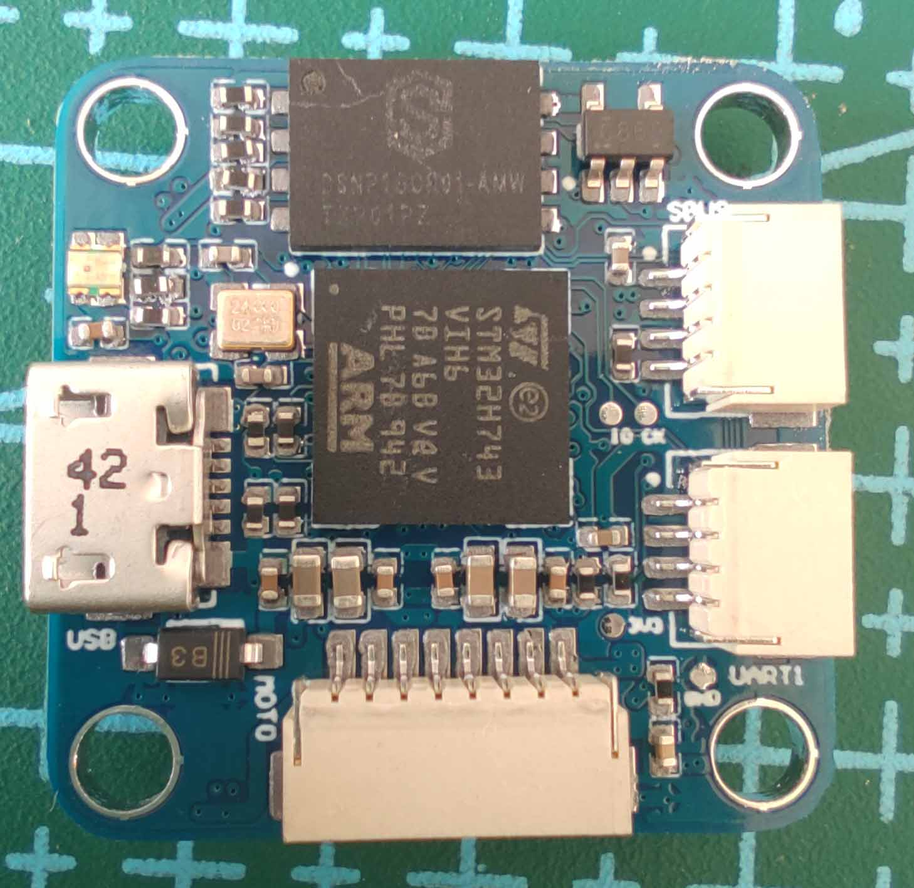

PX4硬件方案
简介
基于px4做的几款飞控硬件方案
硬件方案
| 命名 | 方案 |
|---|---|
| GLPX4-F4 | 基于STM32F427VIT6 |
| GLPX4-H7 | 基于STM32H743VIH6 |
| GLPX4-R329 | 基于全志R329 |
| GLPX4-ESP32 | 基于ESP32 |
GLPX4-F4
- 主控: STM32F427VIT6
- IMU： MPU9250 ICM-20602
- 磁力计：LIS3MDL
- 气压计：MS5611
- 光流：PMW3901MB
- 激光：VL53L1X
GLPX4-H7
- 主控：STM32H743VIH6
- IMU：MPU9250 ICM-20602
- 磁力计：LIS3MDL
- 气压计：MS5611
GLPX4-R329
- 主控：全志R329
- IMU: ICM-20689 ICM-20602
- 磁力计：IST8310
- 气压计：MS5611
- PWM: PCA9685PW
GLPX4-ESP32
- 主控： ESP32-D2WD
- IMU： MPU9250
- 光流：PMW3901MB
- 激光：VL53L1X
图片及演示视频
GLPX4-R329


GLPX4-F4

GLPX4-H7

GLPX4-ESP32

GLPX4_R329开机自启动
脚本auto_run.sh
nohup taskset -c 1 /root/px4/build/px4_raspberrypi_default/bin/px4 -s /root/px4/px4.config -d &> 1 > /root/px4/px4.log
armbian添加isolcpus
vim /boot/armbianEnv.txt 添加：
extraargs=isolcpus=1
PX4 飞控稳定调试
-
首先在自稳模式下将PID参数调稳定，调试
Multicopter Rate Control菜单下MC_ROLLRATE_P,MC_ROLLRATE_I,MC_ROLLRATE_D,MC_PITCHRATE_P,MC_PITCHRATE_I,MC_PITCHRATE_D这六个参数即可
-
自稳PID调试完成后，此时飞行会发现飞行器总是会朝某个方向“倾斜”飞行，此时最好先将机体各部位都固定稳定，中心最好在机体中心（电池位置最好也固定，不然电池的拆卸也是影响重心的一个要点）。然后调试
Sensors菜单下的SENS_BOARD_X_OFF和SENS_BOARD_Y_OFF两个参数，最完美的状态是调试到roll和pitch不总是朝一个方向飞行，只会随机朝某个方向缓慢飞行
-
随后切换到offboard模式进行定位调试，如果设置指定高度后飞行器一直飞行不到指定高度，请增大
Multicopter Position Control菜单下的MPC_THR_HOVER和MPC_Z_P参数
-
随后调试定位的参数，
Multicopter Position Control菜单下的MPC_XY_P,MPC_XY_TRAJ_P,MPC_XY_VEL_D_ACC,MPC_XY_VEL_I_ACC,MPC_XY_VEL_P_ACC这几个参数，注意增大其中MPC_XY_VEL_I_ACC参数对减小偏移有显著效果